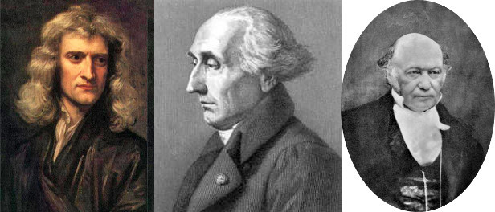

D1.1 Charges and Fields in the Standard Model#
D1.1.1 Introduction#
University Physics I introduces students to Newtonian mechanics through basic algebra and calculus. In University Physics II, we will continue applying Newtonian mechanics but will also explore elements of modern physics and the process of getting there. In short, Sir Isaac Newton published his Mathematical Principles of Natural Philosohpy in 1678. The deterministic nature of Newton’s work was a key in the scientific revolution and even today we use Newton’s descriptions of science in engineering and explaining the nature around us. Newton’s view of the universe is based on observations from which he derived his famous three laws with a foucs on forces: law of inertia, the law quantifying actions and concequences, and the law of action and re-action, and they constitute what is known as Newtonian Mechanics. The focus of Newtonian mechanics is in identifying the forces (or interactions) that interacts with an object and less on the object itself.
A second approach of formulating the classical laws of physics is through the Lagrangian, which is a variational method. Lagrange published his Analytical Mechanics in 1788 and is based on a fundamental principle known as Hamilton’s Principle also known as the principle of least action.
While both classical approaches fail in explaining modern physics, the principle behind least action is considered the fundamental principle of nature as the modern theories can be derived from this principle.
Later, philosophical issues as well as observational contradictions began to appear. For example, Newton’s law of gravity has no reference to time and as such, the propagation of interactions are instantaneous across the universe, and the law of action and re-action. In the later case, moving charges exerting magnetic forces on each other, however, this pair of forces violates Newton’s third law. If we instead consider the system from a momentum point of view, include momentum carried by the electromagnetic field and consider momentum flux, then Newton’s third law can be reformulated to hold true.
With the increased understanding of electromagnetism in the mid 1800’s, and the establishment of classical field theory through the work by James Clerk Maxwell, it became evident that Newton’s view was not complete and even failed in certain areas. Aside from the above example of action and re-action violation, Maxwell’s equations describing electromagnetic theory were not invariant under a Galilean transformation as would be required by Newtonian mechanics. Instead, it was invariant under a Lorentz transformation, which lead Einstein on the path of special and general relativity.
After special and general relativity was well established it was clear that Newton’s laws were only approximations to a bigger picture. New experimental results in late 1800 and early 1900 lead to discoveries on small scale where the Newtonian formalism collapsed completely. Instead, physicists at that time employed the classical formalism developed by Lagrange and based on Hamilton’s principle. This work lead to quantum mechanics where new concepts like quanta combined with classical field theory successfully explained observations for simple systems such as the hydrogen atom. This new era spun many new observations and what seemed like crazy postulates started to emerge: probability waves, uncertainty principles, etc. New theories were established and one of the most significant of those was the Schrödinger wave equation: the equivalent to Newton’s second law in Newtonian mechanics and can be derived from the Lagrange-Hamilton approach. This marked the beginning to the model we now have of the universe.
Paul Dirac established the ground work for a modern quantum field model that was later formulated by Richard Feynman, Julian Schwinger, and Shinichiro Tomonaga. It is these quantum field models we today consider the standard model, however, quantum gravity is a causing some issues and is not part of the standard model.
D1.1.2 Modern Physics: Field Theories and Charges#
The way nature works as we know as of today (tomorrow may be different) is described through quantum field theories. The interaction of forces as Newton described originates from four fundamental fields:
Quantum Gravity
Electric
Weak
Strong
The concept of force can be desribed in two ways:
action of field generated by one particle acting on another particle resulting in momentum transfer.
one particle emitting a virtual particle which is absorped by another particle resulting in momentum transfer.
I know you are sitting on the edge of your chair of pure excitement right now, so I will go ahead and tell a little bit more.
Quantum Gravity#
This theory describes gravity where quantum physics cannot be ignored and where general relativity breaks down (for example, singularity of black hole). This is the one field theory that still is debated. There are two dominant theories: string theory (more specifically M-theory) and loop quantum gravity. Each of these theories are actually hypotheses as no observations have yet confirmed (or disproven) them.
In quantum gravity, the gravitational field interacts with particles with mass charge and the virtual particle is the graviton. The reason to call mass for mass charge will become evident soon.
Electric#
This theory describes the interaction between light and matter and is arguable the most successful theory of physics as verification of extremely accurate predictions has been performed. The theory is known as Quantum Electro Dynamics or QED. The great Richard Feynman was one of three recipient of the Nobel Prize in physics for work on this theory. The others were Shin’ichirō Tomonaga and Julian Schwinger. It should be noted that their work was build on work by many other prominent physicists such as Paul Dirac and Hans Bethe.
In quantum electro dynamics, the electric field interacts with particles with electric charge and the virtual particle is the photon.
Weak#
The weak interaction is also known as electro-weak interaction and is responsible for radioactive decays of subatomic particles. The theory is known as Quantum Flavor Dynamics or QFD and can be combined with QED (hence the name electro-weak).
In quantum flavor dynamics, the weak field interacts with particles with flavor charge and the virtual particles are the \(W^+\), \(W^-\), and Z bosons. The flavor charges come in flavors of up, down, top, botton, strange, and charm. Yah, who came up with that?
Below is a Feynmann diagram showing the decay of a neutron (three quarks in flavors of up, down, and down) into a proton (three quarks i flavors of up, up, and down) and producing an electron and an anti electron neutrino.
In contrast to the gravitational and electric field theories, there is no equivalent classical limit for the weak interaction since it is limited to nuclear processes.
Strong#
The strong interaction is described through Quantum Chromo Dynamics or QCD. This interaction is called strong since it is significantly stronger than the other field interactions on short scales.
On the smallest scale, the strong interaction is responsible for holding, or gluing, quarks together to form hadrons such as protons and neutrons, baryons, and mesons. An interesting fact is that the mass of these particles are mostly energy in form of the binding energy between the interacting quarks, and we say that the field energy is what makes up 99\(\%\) of the mass of protons and neutrons. This is a great example of \(E = mc^2\), which shows that energy and mass are equivalent.
Due to its strong nature, the interaction between quarks can be felt between individual hadrons as well. That is, one hadron can interact with another hadron and this is known as the residual strong force or nuclear force. This interaction binds hadrons together on scales comparable to neighboring hadrons whereas the electric interaction will dominate on larger scale. This explains why, for example, a helium nuclei is stable. Since a helium nuclei contains two protons and two neutrons, one may expect the eletric repulsive interaction to push the protons apart. However, the strong interaction owerpowers the electric repulsion and holds the protons and neutrons together to form a stable nuclei. This process holds for nuclei up to Bismuth with 83 protons and 126 neutrons. As the nuclei gets larger, more and more neutrons are required to hold it together until the size of the nuclei is such that the electric interaction repels the protons apart and we have an unstable nuclei.
The short-scale strong field interacts with particle possessing color charge (red, green, blue, and anti-red, anti-green, anti-blue). The great Richard Feynman called his colleagues for idiot physicists for providing this labeling. The virtual particles are the gluons.
The residual force acts on left-over color or the hadron/baryon/meson particles, while the messengers (or virtual particles) are the \(\pi\) and \(\rho\) mesons.
General Relativity#
On very large scale, general relativity tells us that gravity as we know it, and as described through Newton’s law of gravity, is not a real interaction but instead a manifestation of space-time curvature. In this theory, mass and energy dictates how space-time curves and space-time curvature dictates how matter moves. Just as with the quantum field theories, the principle is derived from the Lagrangian and Hamilton’s Principle. This leads to the Geodesic Equation, which provides us with a set of differential equations with solutions that parameterizes the path of a particle or photon.
The input into the geodesic equation is a metric tensor describing a metric for a given coordinate system. For example, in a flat 2D Euclidean space, the metric is simply \(ds^2 = dx^2 + dy^2\), and the solution to the geodesic equation is a straight line. In fact, all Euclidean spaces are flat space whereas Minkowski space is a flat space-time. Special relativity is general relativity in flat space-time. When the space-time is curved, we consider a four-dimensional Lorentzian manifold.
In flat space-time,two observers at rest relative to each other will measure the same elapsed time whereas two observers moving with respect to each other will measure two different elapsed times (time dilation). In curved space-time, the two observers at rest will not measure the same elapsed time if one or the other is near a massive object, unless they are at the same position infinitely far away from the massive object. Hence, there are time dilations due to relative motion and due to massive objects. We actually experience this in everyday life through GPS systems as signals from GPS satellites are subject to time dilation from relative motion, but also due to space-time curvature of the Earth.